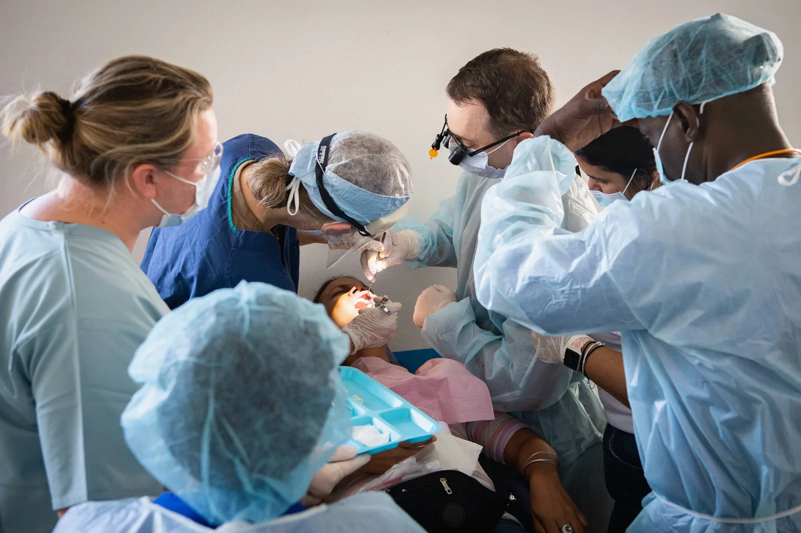

Boas-vindas
O usuário escolhe qual perfil deseja representar na jornada e entende o objetivo do fluxo.
Perfil, contexto, revisão e orientação: quatro momentos para compreender o caminho de acolhimento em saúde bucal.
Cada etapa foi criada para explicar a experiência e não para substituir regras clínicas, análise socioeconômica ou atendimento humano.
O usuário escolhe qual perfil deseja representar na jornada e entende o objetivo do fluxo.
Região e necessidade de atenção são apresentadas como perguntas simples de orientação.
Um resumo visual permite conferir as respostas antes de visualizar um resultado educativo.
As respostas escolhidas levam a uma orientação educativa sobre avaliação, prevenção ou participação na rede.

A jornada digital organiza informações para aproximar pessoas, profissionais voluntários e organizações parceiras.
Conhecer a propostaA jornada utiliza JavaScript próprio para avançar e retornar entre etapas, atualizar o progresso e mostrar um resultado educativo baseado apenas nas opções escolhidas durante a sessão.